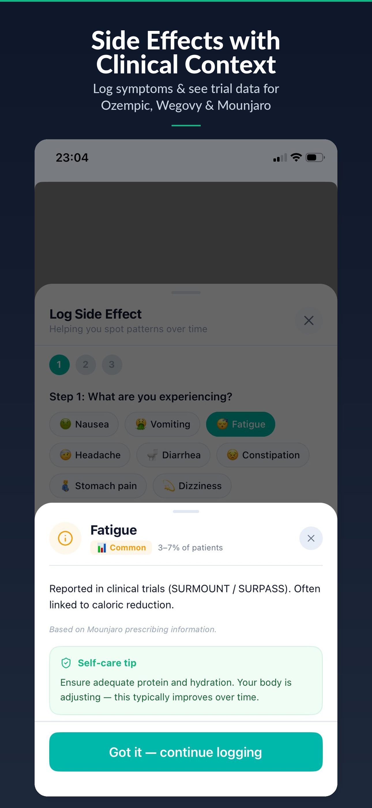
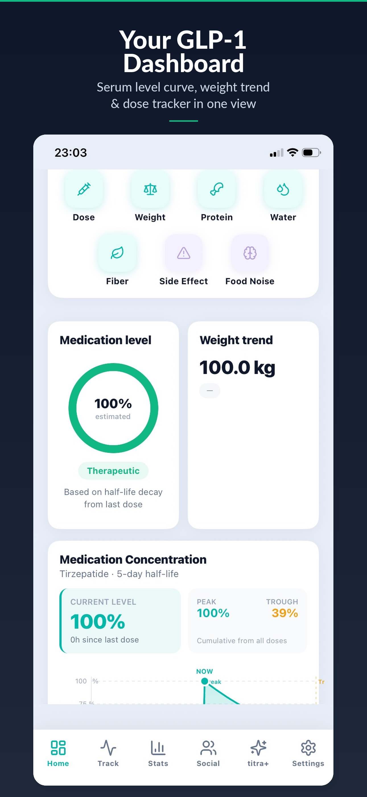
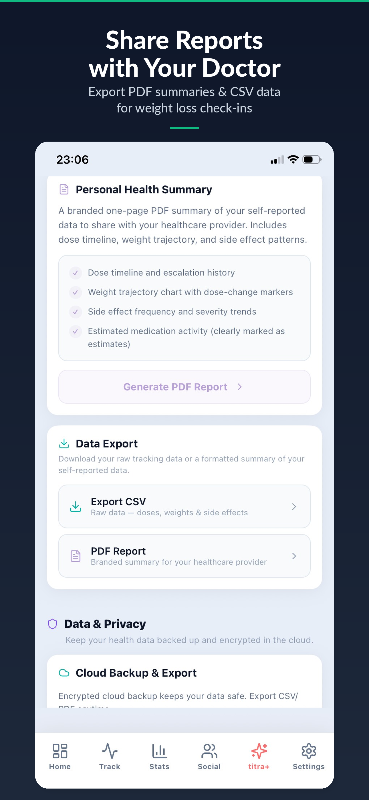
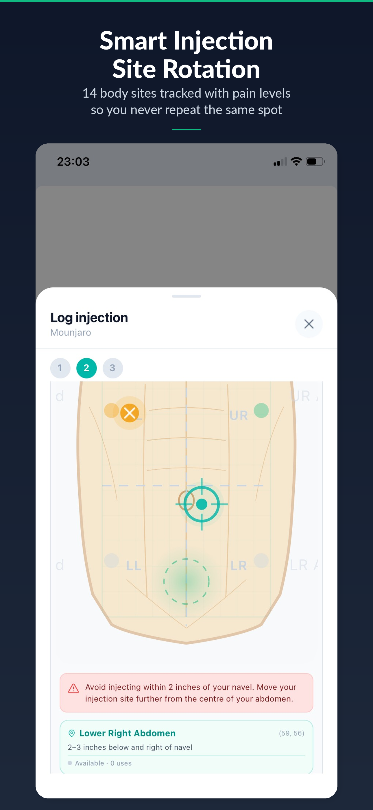
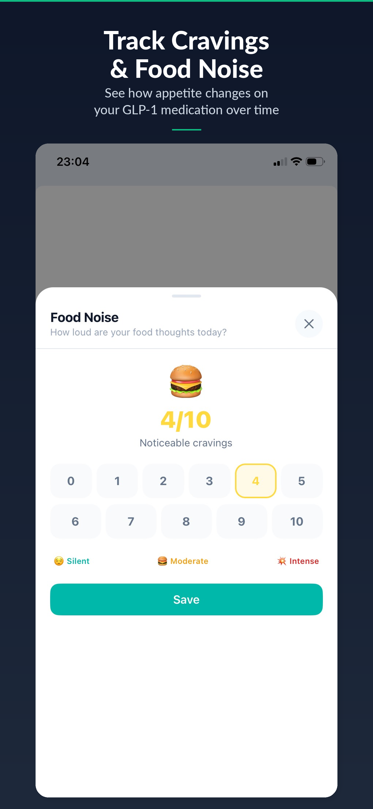
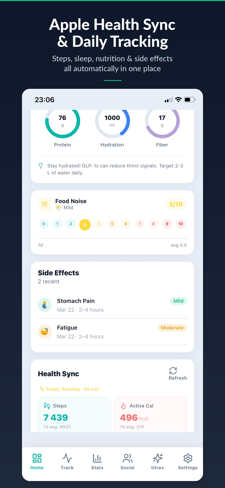
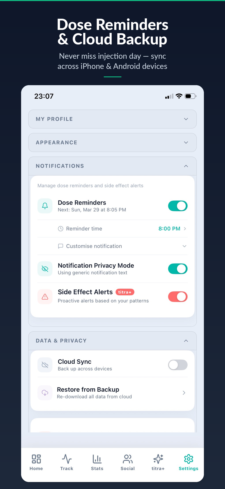
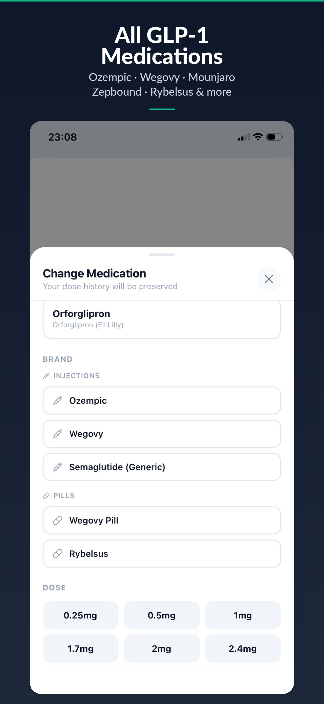

Smart Dose Logging
Log GLP-1 injections or oral medications in seconds. Track the medication name, dose amount, injection time, and add notes. Full dose history at a glance.
Titra is a free app that helps you track GLP-1 medication doses, visualize estimated serum levels, rotate injection sites, log side effects, and share reports with your doctor — all in one place.








Every feature in Titra was built with input from real GLP-1 patients and informed by published clinical pharmacokinetic data.
Log GLP-1 injections or oral medications in seconds. Track the medication name, dose amount, injection time, and add notes. Full dose history at a glance.
See your estimated blood concentration using pharmacokinetic modeling. Titra calculates half-life decay from your last dose to show where your medication level likely is right now.
Visual body map with 14 injection zones. Smart warnings prevent you from injecting too close to your navel or reusing the same site too soon, helping prevent lipodystrophy.
Chart your weight alongside medication data. See correlations between dose changes and weight trends to understand how your GLP-1 medication is working.
Log symptoms and see how common they are based on clinical trial data. Get self-care tips sourced from official prescribing information for medications like Ozempic and Mounjaro.
Rate your food noise (appetite cravings) on a 0–10 scale daily. Track how GLP-1 medications reduce intrusive food thoughts over time with clear trend charts.
Connect Apple Health or Google Health Connect to pull in steps, calories burned, nutrition data, heart rate, and sleep — all alongside your GLP-1 tracking in one app.
Generate professional PDF summaries to share with your healthcare provider. Includes your dose timeline, weight trajectory, side effect patterns, and medication adherence data.
Titra's Serum Level Estimator uses published pharmacokinetic data — including half-lives, bioavailability, and absorption rates — to model your estimated medication concentration over time. For example, semaglutide (Ozempic, Wegovy) has a half-life of approximately 7 days, while tirzepatide (Mounjaro, Zepbound) has a half-life of about 5 days.
Based on the same pharmacokinetic data your doctor references, presented visually so you can understand your medication levels between doses.
For informational purposes only. Titra does not provide medical advice, diagnosis, or treatment. Always consult your healthcare provider.
Titra supports both injectable and oral GLP-1 receptor agonist formulations with accurate pharmacokinetic data for each medication.
Free to download on iOS and Android. No account required to get started.